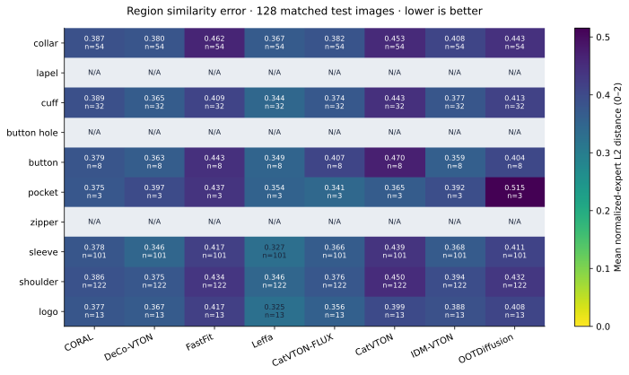

VTON regional comparison
8 published models · 128 matched VITON-HD cases · 1,024 generated images
Lower scores are better. Molmo locates garment parts; frozen DINO experts compare each output with GT at the same locations.

Scores with uncertainty